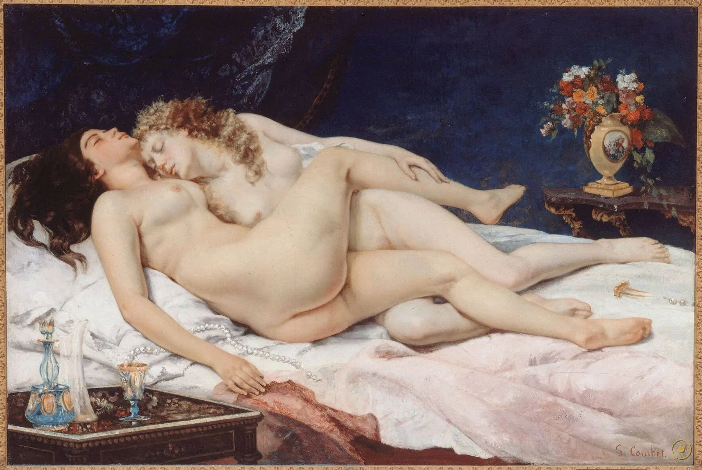
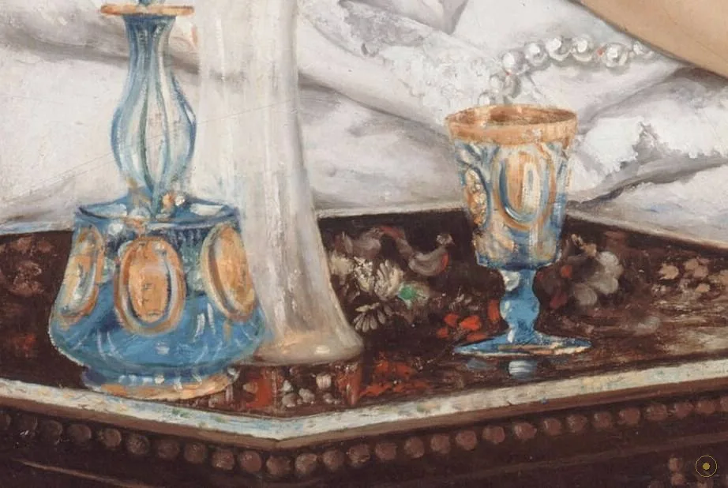
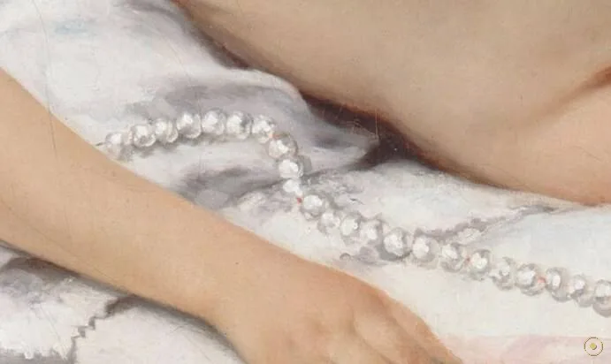
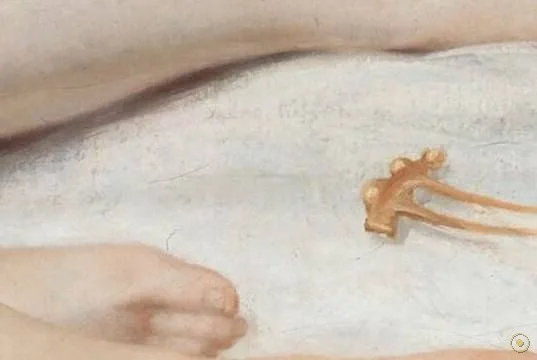
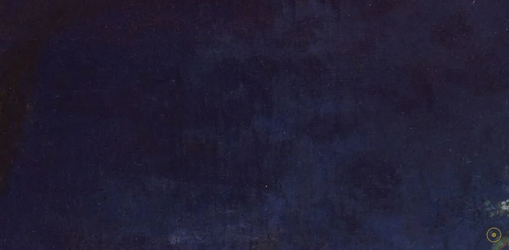
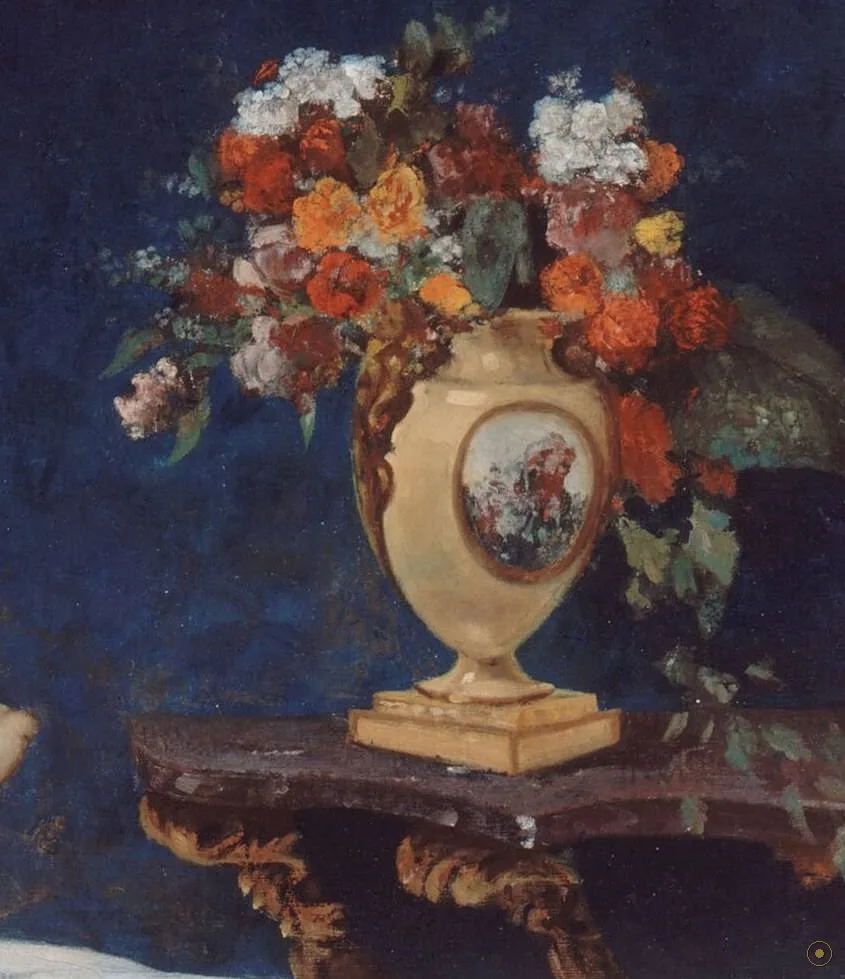
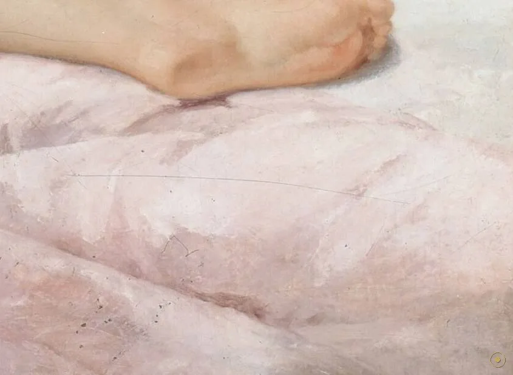
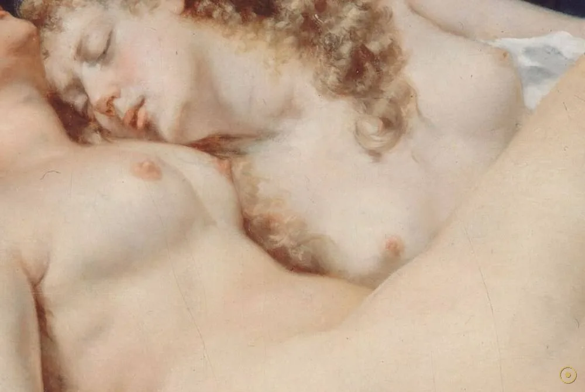
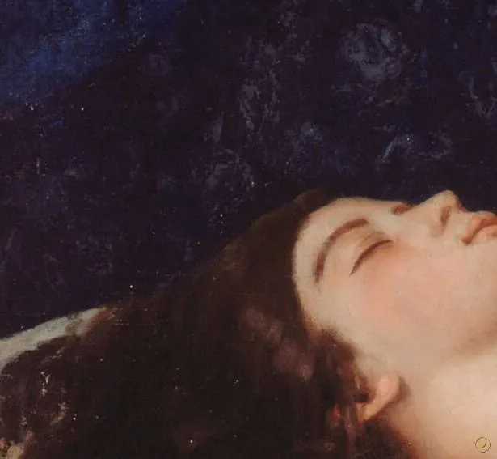

本页面展示的画作包含 艺术人体 / 裸体 内容。所录作品均为美术馆级公有领域馆藏，仅作艺术欣赏与学习之用，不含任何低俗或违规意图。
若您未满 18 周岁，或对此类内容感到不适，请点击「返回画廊」。点击「进入欣赏」即表示您已知悉上述说明，并同意仅作艺术欣赏之用。
没有神话，也没有寓言的化身——库尔贝只是画了两个真实的人，在真实地睡着。
《睡眠者》(Le Sommeil，英文常译 The Sleepers 或 Sleep) 是库尔贝 1866 年的一幅布面油画。画面是一间拉上深蓝帷幔的卧室：两名女子在床上相拥而眠，一人深发、一人棕红卷发，身体交叠；床单上散落着一串断开的珍珠项链与一支发簪。除这几样物事，画中再无多余陈设——画家把全部注意力压在了两个人与一场睡眠上。
它特殊，也因为它长期「不被允许被看见」。此画由奥斯曼外交官、收藏家哈里尔·谢里夫帕夏（Halil Şerif Paşa）订制；1872 年一位画商将它公开陈列时，它随即成为警方报告的对象；与库尔贝的《世界的起源》一样，它长期只能在私下流传，直到 1988 年才首次公开展出。也就是说，它先是一幅画，然后才慢慢成为「可以看的画」。
所以这一页不替你下结论，只带你走近：点开画面上的 ✦ 光点，去看两张相贴的睡脸、交叠的身体、暗蓝的帷幔、床单的褶皱、静物小桌上的杯瓶，以及那串散落的珍珠。留意一个事实——这里没有神话，也没有寓言，只有两个真实的人，在真实地睡着。
—— 画的构思据波德莱尔《恶之花》中〈Delphine et Hippolyte〉一诗（据英译转译，学界亦有不同看法）
在本页左下角，可以点亮一段与画同时代的法国夜曲。
从两张相贴的脸，到帷幔、织物、静物与遗落的发簪：每一处都是库尔贝与「写实」的较量。

点按画面上的 ✦ 光点，查看每一处细节
从 1866 年的一纸订件，到 1872 年的警方报告，再到 1988 年第一次公开展出——这幅画的命运，比画面本身更曲折。
1866 · 巴黎 · 订件与创作
1866 年，奥斯曼帝国外交官、收藏家哈里尔·谢里夫帕夏向库尔贝订制了这幅画。他 1860 年起旅居巴黎，热衷收藏当代法国绘画，也曾订走库尔贝的《世界的起源》。为私人订作的两幅最大胆的作品，都出自他手——因为画归一人所有，就不必面对公众的目光。
➤1872 · 巴黎 · 展出与风波
1872 年，一位画商把《睡眠者》公开陈列，它随即成为警方报告的对象，理由是其题材「不道德」。在那个年代，一幅画被看见，可能先是一桩案件，而不是一次欣赏。此后它退回私人视野，长期难以公开展出。
➤1955–1988 · 致敬与解禁
1955 年，画家贝尔纳·布菲（Bernard Buffet）以《睡眠者》为题创作了致敬之作，说明它在二十世纪已被视为经典。真正的转折发生在 1988 年——此画首次获准公开展出。今天，它陈列于巴黎小皇宫（Petit Palais）：曾经「不可见」的画，如今挂在任何人都能走进的展厅里。

它是「订件」。1866 年由奥斯曼帝国外交官、收藏家哈里尔·谢里夫帕夏委托，此人 1860 年起定居巴黎，是当时巴黎最活跃的外国收藏家之一；库尔贝的《世界的起源》同样出自他的订制。
它曾被「举报」。1872 年，一位画商公开陈列《睡眠者》，此画随即成为一份警方报告的对象——官方给出的理由，是它的题材「不道德」。
它长期不得公开。与《世界的起源》一样，此画在很长一段时间里只能在私人之间流传、被小范围观看，直到 1988 年才首次公开展出。
据记载，此画的模特之一是画家惠斯勒当时的情人 Joanna Hiffernan；这段关系不久后结束，惠斯勒对库尔贝的评价也随之转差（此类逸事的因果与细节学界仍有争议）。画的构思则被认为与波德莱尔《恶之花》中〈Delphine et Hippolyte〉一诗有关（据英译转译）。
以极少的道具，构建一个封闭而写实的室内世界。

珠子在床单上散开，暗示刚才的辗转与动作。

与珍珠一样，只留下痕迹，不叙述事件。

吞光的蓝把肌肤反衬得发光，也隔开了外界。
香水瓶、水晶器、杯子——以极小尺寸被精确记录。

插满花的描金瓶，提示着室内的富足与主人趣味。

松弛的笔触带过的白，用来「托」住皮肤。

两具身体被经营成一条起伏的线，冷暖相照。

睡者的松弛神情，是整幅画「静」的来源。
库尔贝的现实主义立场很硬：1855 年他自办「写实主义」展馆，1861 年留下「绘画只能再现真实存在之物」式的宣言。落到《睡眠者》上，就是拒绝神话、拒绝化身、拒绝把人体打磨成理想——他只画两个有重量、会松垂、带瑕疵的身体，而这恰恰是当时最刺目的地方。
此画的构思被认为与波德莱尔《恶之花》中的诗作〈Delphine et Hippolyte〉有关。诗与画的做法相似：都把同性之间的情欲放进「夜」与「睡眠」的语境里，用暧昧与沉默代替直白。文学给了它动机，画布给了它体温。
订画者哈里尔·谢里夫帕夏是奥斯曼帝国外交官，1860 年起旅居巴黎。这类「私人订件」在十九世纪中叶推动了大胆题材的产生——因为画为一人所有，不必面对公众的视线。订画人的趣味，在某种程度上决定了艺术家敢画到什么地步。
1872 年的警方报告、长期的私藏、直到 1988 年的首次公开展出——《睡眠者》的接受史本身就是一部「审查史」。它提醒我们：一幅画的意义不仅由画面决定，也由它被允许何时、被谁看见决定。今天它挂在展厅里，而「被看见」这件事，它等了很久。
库尔贝受奥斯曼外交官哈里尔·谢里夫帕夏之托，于巴黎完成《睡眠者》。
一位画商公开陈列此画，它随即被警方记录在案，理由是其题材「不道德」。
画作长期在私人收藏中流传，很少公开展出，逐渐淡出公众视野。
画家贝尔纳·布菲（Bernard Buffet）以《睡眠者》为题创作致敬之作。
《睡眠者》首次获准公开展出；今天它陈列于巴黎小皇宫（Petit Palais）。